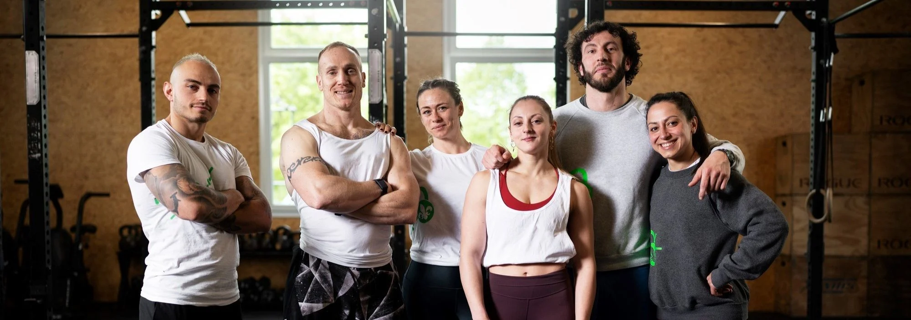

-
Puedan encontrar una mejora en su vida.
-
Logren cumplir sus metas personales
-
Encuentren satisfacción en cada decisión tomada.

¿Quiénes Somos?
Somos una empresa con 15 años de trayectoria, que ha sabido sobrellevar diferentes adversidades, buscando siempre un bienestar para el usuario, que este pueda amar la actividad física e incorporar hábitos saludables para su vida cotidiana. Es al día de hoy que estamos orgullosos de haber llegado hasta aquí.
-
Capaticación continua de nuestro personal.
-
Brindar un amplio abanico de actividades, entrenamientos para todos nuestros usuarios.
-
Acompañar al usuario en su desarrollo.
Objetivos:
-
Nuestra visión es ser "El mejor sitio web deportivo". Nuestros pilares:
Promocionar la salud.
Calidad y profesionalismo, tanto en instructores como en nuestra interfaz.
Cumplir los objetivos de nuestros clientes.
Visión
-
Nacimos el 11 de septiembre 2007, con una simple plataforma y hoy nos encontramos próximos a inagurar gimnasios en ciudades importantes de nuestro país.
-
En agosto del año 2008 pudimos contratar profesionales instructores en el area de musculación.
-
En enero de 2009 se incorporaron más categorias con profesionales a su cargo tales como: funcional y calistenia.
-
En octubre de 2019 expertos en powerlifting se sumaron a nuestra familia.
-
En el año de pandemia, supimos mejorar y reinventarnos para lograr una estabilidad en nuestros usuarios. Psicólogos y nutricionistas se unieron a nosotros y supimos mantener un trato más entrañable con nuestros usuarios.
-
En noviembre del año 2021 logramos inagurar nuestro primer gimnasio en Buenos Aires logrando concretar lo que alguna vez soñamos desde que conocimos este hermoso mundo del entrenamiento, vida y hábitos saludables.